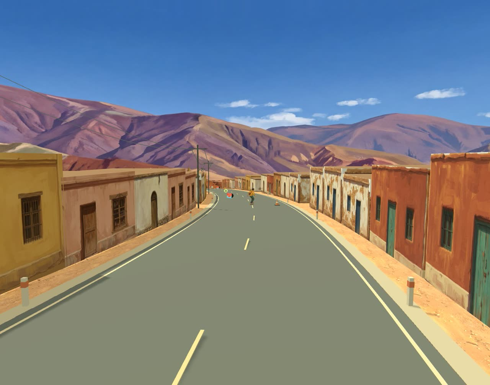
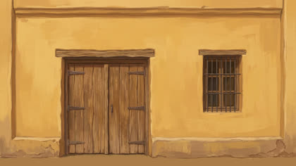

Bajar la cuesta hasta el pueblo.
Deriva es un juego de longboard en el navegador: 2,4 km de bajada con carving, conos y coleccionables. Este caso documenta cómo el escenario pasó de un prototipo de cajas grises a un pueblo de la Quebrada de Humahuaca, con todo el arte pintado por IA generativa y una trama urbana construida en código.


- Casas de adobe
- 1.368en damero y puestos, dibujadas en 6 draw calls
- Imágenes generadas
- 5240 con Nano Banana Pro y 12 con modelos abiertos
- Costo del arte
- ≈1.444créditos de Comfy Cloud más ≈457 s de GPU
- Rondas de iteración
- 4en un día, guiadas por feedback visual
Dos lecturas del mismo proceso
 Cómo se construyeron los escenariosDel terreno plano a un pueblo en damero: geometría, trama urbana, niebla que se disuelve en la pintura y el panorama de fondo.
Cómo se construyeron los escenariosDel terreno plano a un pueblo en damero: geometría, trama urbana, niebla que se disuelve en la pintura y el panorama de fondo.

Cómo se crearon los assets con IAEl pipeline en ComfyUI con Nano Banana Pro, la comparativa con modelos abiertos, los prompts, el posproceso y los costos.Cuatro rondas
- Fachadas pintadas. Las cajas pasan a tener una piel pintada por cara, generada en ComfyUI con el panorama y el mural del juego como referencias de estilo.
- Variantes y comparativa. Ocho casas y el entorno con Nano Banana Pro; Flux.2 Dev, Qwen-Image-Edit y Z-Image Turbo evaluados con el mismo encargo.
- Diagnóstico. Una niebla que se disuelve en el panorama, referencias de juegos con ciudades de cerro y una conclusión: el problema era la geometría, no las texturas.
- Jujuy. Un pueblo en damero con plaza e iglesia, pircas y cardones, y un panorama nuevo de la Quebrada que guía el estilo de todo lo demás.